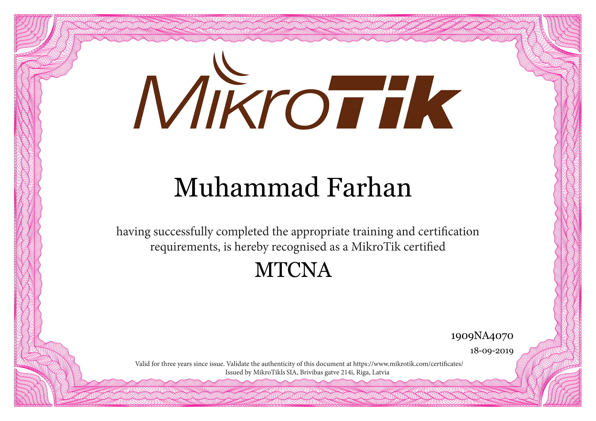
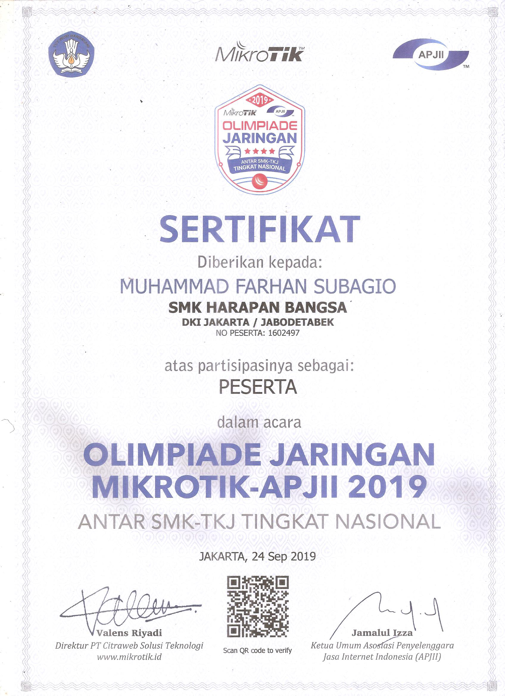

Curriculum Vitae
Data Pribadi
- Nama : Muhammad Farhan Subagio
- Umur : 18
- TTL : Depok 20 November 2001
- Jenis Kelamin : Laki-laki
- Agama : Islam
- Tinggi Badan : 173
- Berat Badan : 80
- Alamat : Kp. Areman Jl. Alamanda Blok Aster Rt.001/007 No.61 Kec.Cimanggis Kel.Tugu Kota Depok
- No Handphone : 0887-1007-823
Data Pendidikan
- Sekolah Dasar : MIT Nurul Falah (2008-2014)
- SMP : Mutiara Bangsa (2014-2017)
- SMK : Harapan Bangsa (2017-2020)
Kemampuan
- Informasi Teknologi : MiroTik (Firewall, DHCP, VPN, Tunneling, IPsec) Database : (SQL dan MySQL)
- Bahasa : Bahasa Indonesia(Aktif) English(Pasif)
Prestasi
- Akademik : Olimpiade APJII 2019 (peringkat 8 dari 152 sekolah)
- non Akademik : -
Sertifikat


Website
- klik disini